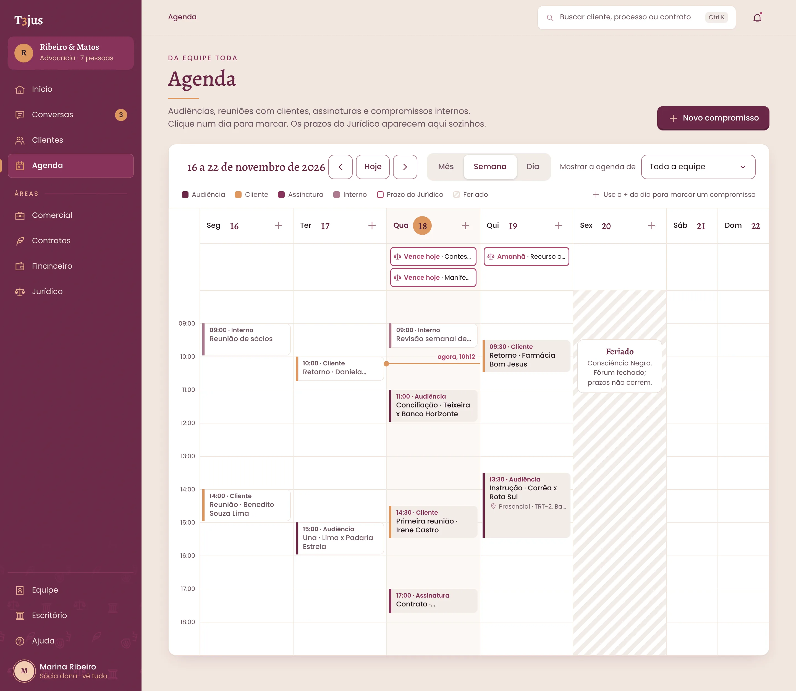
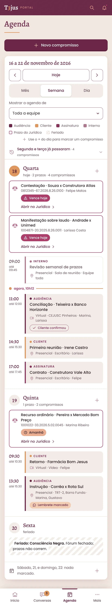

Semana (sócia dona, equipe toda)
Grade de segunda a domingo, das 8h às 19h. Faixa de prazos do Jurídico no alto de cada dia, linha de agora em âmbar e o dia de hoje no disco âmbar. Feriado em hachura (fórum fechado, prazos não correm). O + de cada dia marca um compromisso ali. No celular, vira lista por dia, com os dias que passaram recolhidos.
Abrir: agenda.html?estado=semana (estreite a janela para ver o celular)